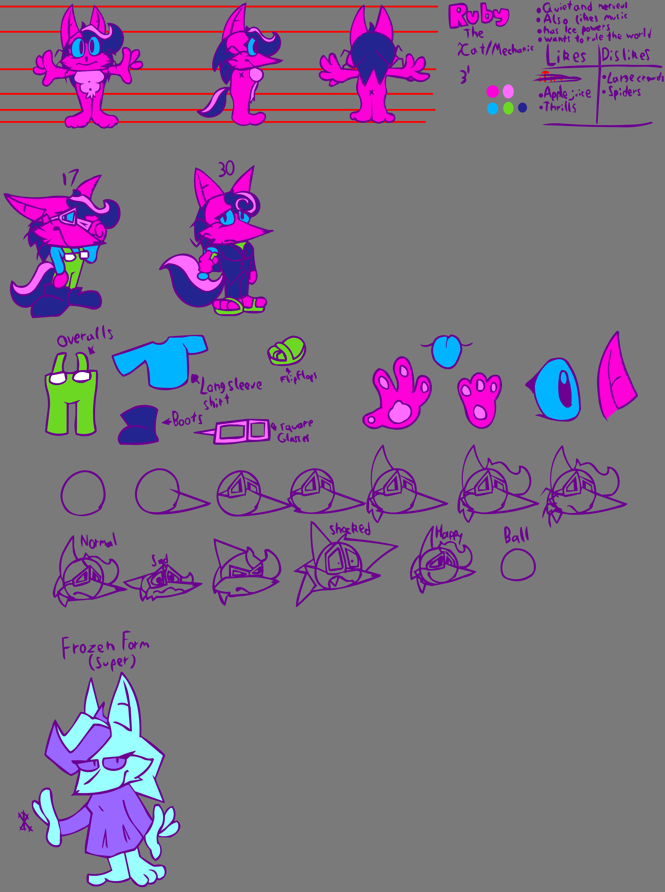

Chris is the character I've used since late 2018, my friend, NeigePastel, helped me get to his final design.
He is the main character in my Indie game Techno-Break.
Originally he was a self insert but now, even though he still has my name, he isn't meant to be a self insert.
Chris is (mostly) mute, and has fire powers. He's mostly up-beat and happy but can be shy sometimes.
Ruby is a character I made during when I was getting my game into Gamemaker (before i switched to godot)
She is the "sidekick" character in my Indie game Techno-Break.
Originally she was meant to be an asshole villain but then I acquired a brain and realized that was dumb.
Ruby is a mechanic that can build anything she puts her mind to. She's very nervous, very shy, and very gay.
